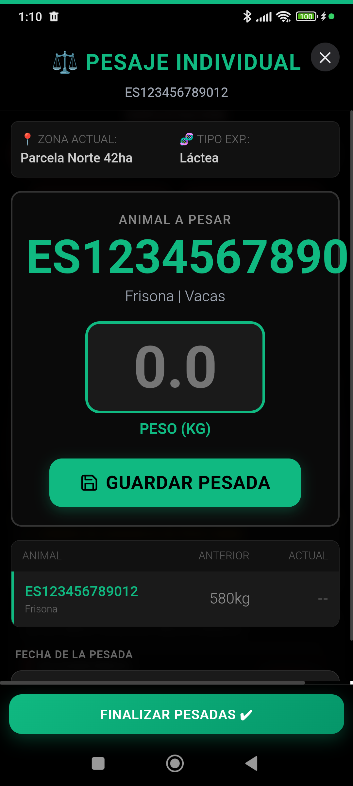

Asistente inteligente para registro de pesos y cálculo de GMD.
1. Acceso Rápido desde ExPro
El control de peso es fundamental para la rentabilidad cárnica. Accede desde el Hub ExPro.
1
Selección
Elegir animal o lote/rebaño
➔
2
Báscula
Llamar o registrar peso actual
➔
3
GMD
Cálculo automático de ganancia
- Asistente de Producción: Al pulsar el botón, se abre un buscador inteligente de animales.
- Selección: Busca al animal por crotal o selecciónalo de la lista de recientes.
2. Registro de Pesada
Introduce el peso y obtén resultados instantáneos.
1
Selección
Elegir animal o lote/rebaño
➔
2
Báscula
Llamar o registrar peso actual
➔
3
GMD
Cálculo automático de ganancia
- Valor Neto: Escribe el peso actual en kilogramos.
- Cálculo de GMD: La app comparará este peso con el anterior y te mostrará la Ganancia Media Diaria automáticamente.
- Historial: El pesaje se guarda en la línea de vida del animal y actualiza los KPIs del Dashboard.
Livestock Manager Premium · v4.8.7 · Guía del Usuario Oficial